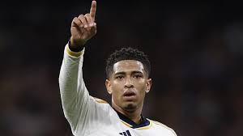

Bellingham sofre lesão e pode desfalcar Real Madrid
postado 14 de julho de 2019 As lesões continuam assombrando o elenco do Real Madrid e preocupando o técnico Carlo Ancelotti. O desfalque da vez é o britânico Jude Bellingham, diagnosticado com uma torção de ‘alto grau’ no tornozelo esquerdo, neste domingo, um dia após ser um dos destaques da equipe na goleada por 4 a 0 sobre o Girona pelo Campeonato Espanhol.,Autor de dois gols na vitória que ratificou o Real como líder do campeonato, Bellingham, artilheiro da competição com 16 gols, deixou o gramado aos 12 minutos da etapa final. O meio-campista poderá ficar de fora de até quatro jogos.
Leia maisMartin Ødegaard: como o garoto prodígio encontrou seu lar no Arsenal
postado 15 de julho de 2019Talvez tenha sido apropriado que a primeira coisa que Ødegaard viu ao sair do túnel antes do pontapé inicial fosse uma enorme faixa estendida no setor visitante que dizia “Nossa Casa” em português. Porque Ødegaard parece ter finalmente encontrado a sua casa no Arsenal.,Apesar da pressão, o meio-campista ria e brincava com as crianças que se alinhavam em frente aos jogadores antes do início da partida, fazendo o seu melhor para tranquilizá-los em meio à atmosfera turbulenta criada pelos fãs desesperados para verem a sua equipe progredir na principal competição da Europa.
Leia maisJogos da Champions League recebem reforço na segurança após ameaça terrorista
postado 17 de julho de 2019
Antes da primeira rodada dos jogos da fase de quartas de final da Liga dos Campeões, nesta terça-feira, as autoridades locais da Espanha e França anunciaram um aumento considerável nas medidas de segurança. Na segunda-feira, uma publicação nas redes sociais, supostamente atribuída ao grupo Estado Islâmico, sugeriu o planejamento de ataques a partidas da competição europeia., Segundo o ministro do Interior francês, Gerald Damarnin, o reforço na segurança é uma resposta à “ameaça”. Damarnin garantiu a realização da partida entre PSG e Barcelona, no Parc des Princes. Em Paris, o nível mais elevado de alerta terrorista está em execução.
Leia mais